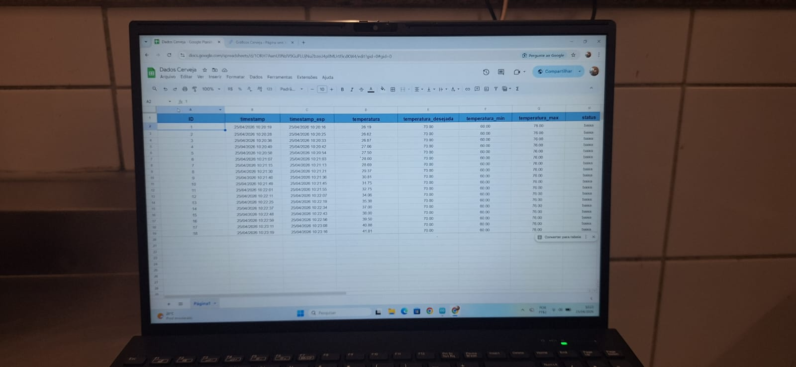

Interpretação dos Dados
O gráfico acompanha a evolução térmica do processo cervejeiro, demonstrando como o sistema reage às variações de temperatura.
O controle ON-OFF com histerese permite estabilizar a faixa térmica, evitando acionamentos excessivos do relé e aumentando a eficiência do sistema.
